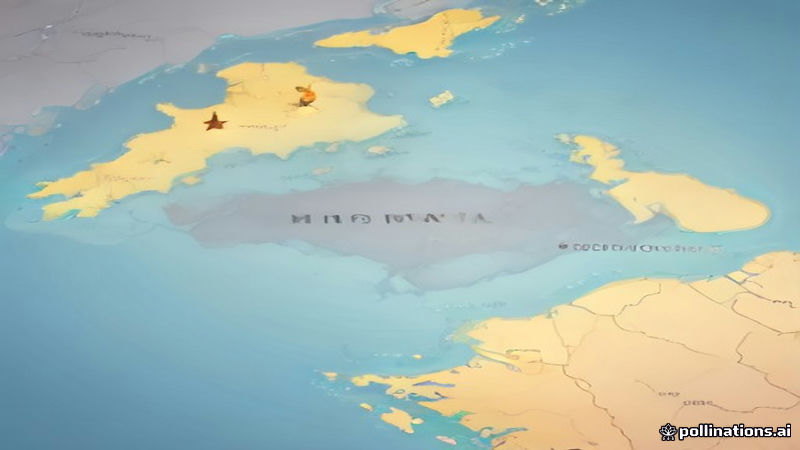

ইইউ জানিয়েছে মন্টেনেগ্রো ২০২৮ সালের মধ্যে সদস্য হতে পারে
DW · 2026-11-04
AI-generated illustrationব্রাসেলসের মতে মন্টেনেগ্রো ২৮তম সদস্য, আলবেনিয়া ও মোলদাভিয়া পরের দিকে, ইউক্রেনকে সংস্কার ত্বরান্বিত করতে আহ্বান জানায়।
ব্রাসেলসের ইইউ কর্মকর্তারা জানিয়েছেন যে মন্টেনেগ্রো ২০২৮ সালের মধ্যে ইউরোপীয় ইউনিয়নের ২৮তম সদস্য রাষ্ট্র হতে পারে, যা আলবেনিয়া ও মোলদাভিয়ার আগে আসবে।
একই বিবৃতিতে ইউক্রেনকে সংস্কার দ্রুত করতে বলা হয়েছে এবং মন্টেনেগ্রোর অগ্রগতি সেরবিয়ার সাম্প্রতিক নির্বাচনের পর নতুন আশার সঞ্চার করেছে।
Read the original reporting at the links above.
English version
EU says Montenegro on track for membership by 2028
EU officials in Brussels stated that Montenegro is expected to become the European Union’s 28th member state by 2028, placing it ahead of Albania and Moldova in the accession schedule.
The same briefing noted that Ukraine must speed up its reform agenda and that the progress of Montenegro offers renewed optimism for Serbia following its elections last month.